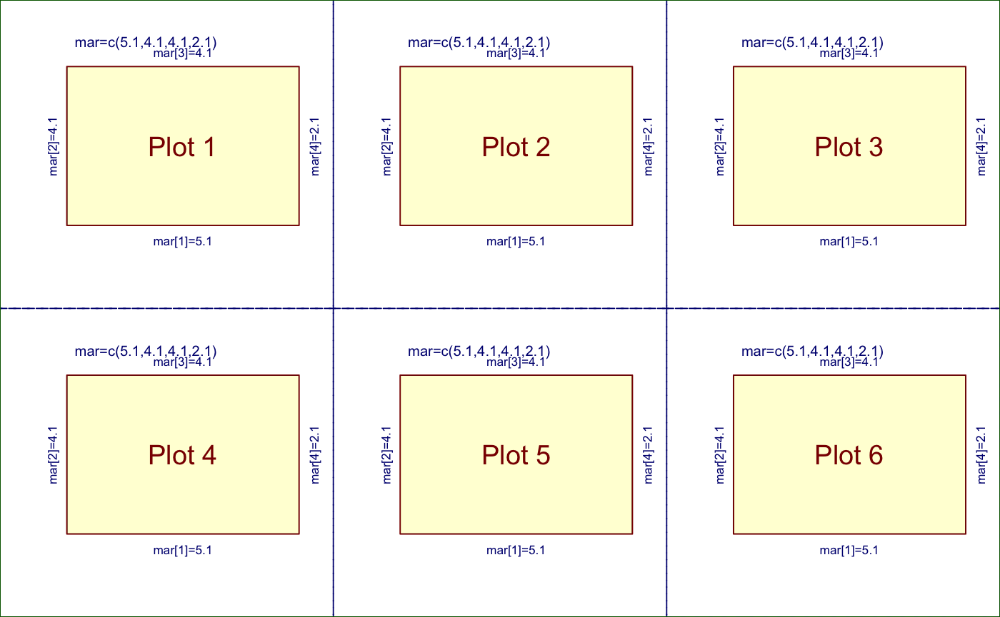

Decide plot panel rows, columns for par(mfrow)
Decide plot panel rows, columns for par(mfrow)
decideMfrow(n, method = c("aspect", "wide", "tall"), doTest = FALSE, ...)
Arguments
| n | integer number of plot panels |
|---|---|
| method | character string indicating the type of layout to favor.
|
| doTest | logical whether to provide a visual test. Note that
|
| ... | additional parameters are ignored. |
Value
numeric vector length=2, with the recommended number of plot
rows and columns, respectively. It is intended to be used directly
in this form: par("mfrow"=decideMfrow(n=5))
Details
This function returns the recommended rows and columns of panels
to be used in par("mfrow") with R base plotting. It attempts
to use the device size and plot aspect ratio to keep panels roughly
square. For example, a short-wide device would have more columns of panels
than rows; a tall-thin device would have more rows than columns.
The doTest=TRUE parameter will create n number of
panels with the recommended layout, as a visual example.
Examples
# display a test visualization showing 6 panels decideMfrow(n=6, doTest=TRUE);#> [1] 2 3# a manual demonstration creating 6 panels n <- 6; par(mfrow=decideMfrow(n)); for(i in seq_len(n)){ nullPlot(plotAreaTitle=paste("Plot", i)); }